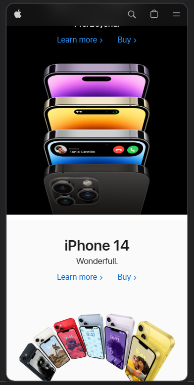

Apple.com uses the F design to create a sense of order and guide the viewer's attention through the content. The important content is placed at the top of the page, and headings and subheadings are displayed using bold and contrasting typography. Different sections of the page are visually separated using white space and visual breaks, making it easier for viewers to find the information they need. Images and other visual elements are also used to guide the viewer's eye. Following these guidelines, Apple.com has created a clear and effective visual hierarchy that helps viewers stay engaged with the content.